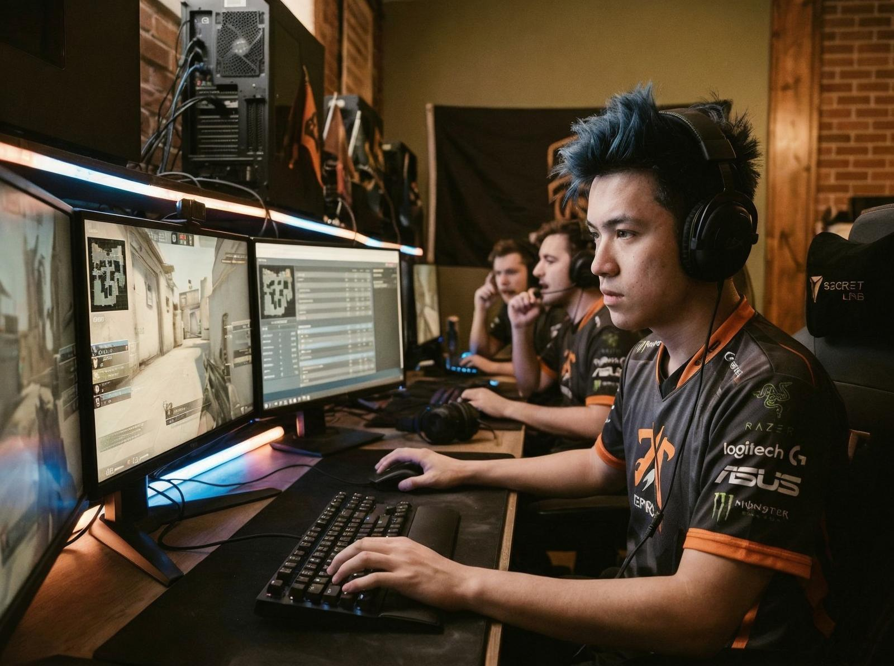
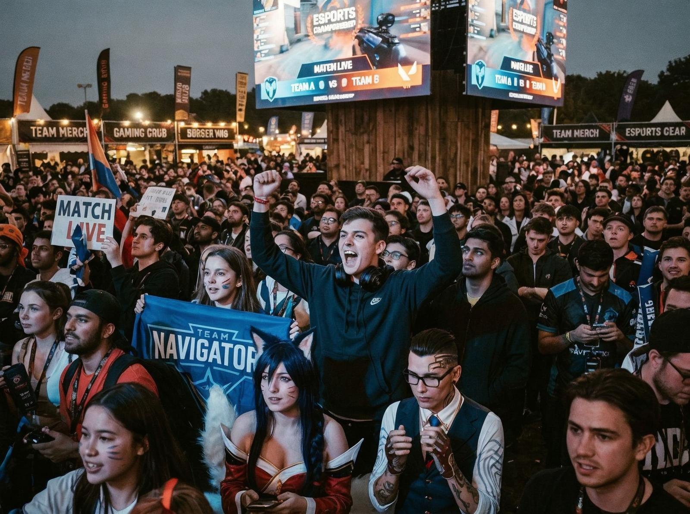

Gaming-ul a început ca hobby. Era ceva pentru copii, ceva pentru pasionați, ceva pentru nișă. Nu era mainstream, nu era cultura principală, nu era ceva pe care toată lumea îl practica.
Azi gaming-ul e cultura principală. 2.6 miliarde de oameni joacă jocuri video. E mai mult decât filmul, mai mult decât muzica, mai mult decât orice altă formă de divertisment.
Și totuși gaming-ul e încă criticat — e pierdere de timp, e nesănătos, e toxic. Criticile vin de la generații care nu înțeleg cultura gaming-ului. Pentru generațiile mai noi, gaming-ul e divertisment, e comunitate, e identitate.

Tensiunea centrală a gaming-ului nu e tehnologică, e culturală. Nu e despre cum funcționează jocurile, e despre cum jucătorii comunică. Gaming-ul nu e doar joacă, e socializare. Nu e doar divertisment, e comunitate. Nu e doar hobby, e identitate.
Detaliul care contează e că gaming-ul a creat o cultură proprie — slang, meme-uri, rituri, tradiții. Jucătorii se recunosc între ei, se comunică, se construiesc comunități. Nu e doar un hobby, e un mod de viață.
Complicația e că gaming-ul e și o industrie — milioane de dolari, miliarde de jucători, miliarde de ore. Nu e doar cultura principală, e și economie principală.

Și uite de ce asta nu e superficial. Gaming-ul e un simptom al unei schimbări mai mari — de la pasiv la activ, de la consumator la creator, de la spectat la participat. E un simptom al unei culturi care vrea să participe, nu doar să privească.
Cultura nu a dispărut, dar s-a schimbat. Nu mai privim doar, participăm și. Nu mai consumăm doar, creăm și. Nu mai suntem doar spectatori, suntem și jucători.
Gaming-ul nu e doar jocuri, e cultură. Nu e doar divertisment, e identitate. Nu e doar hobby, e mod de viață.